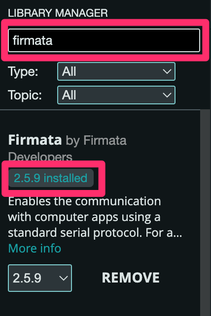
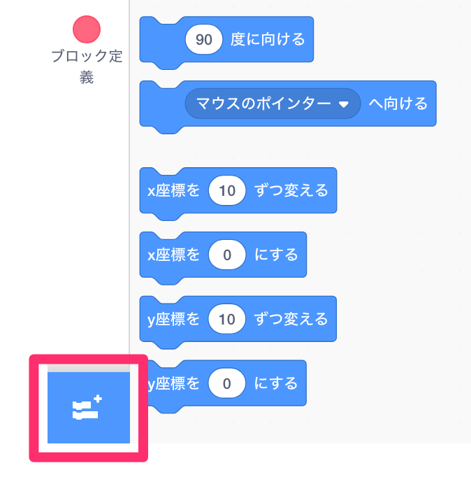
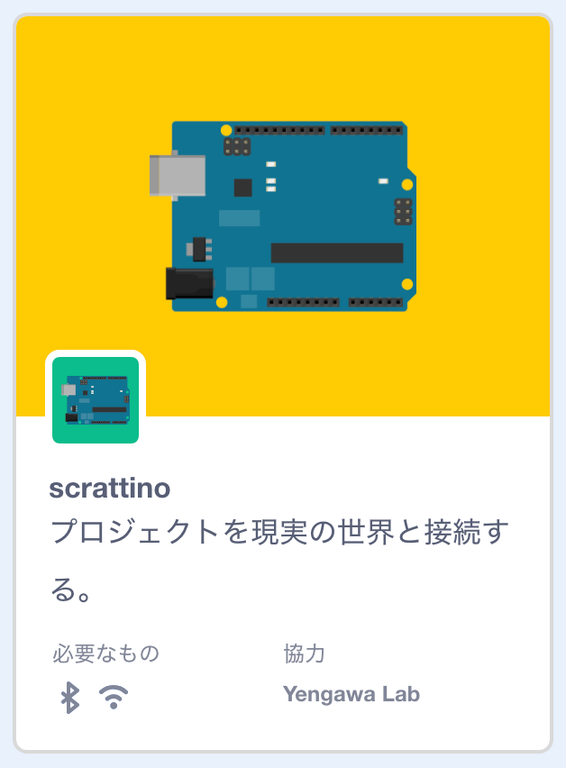
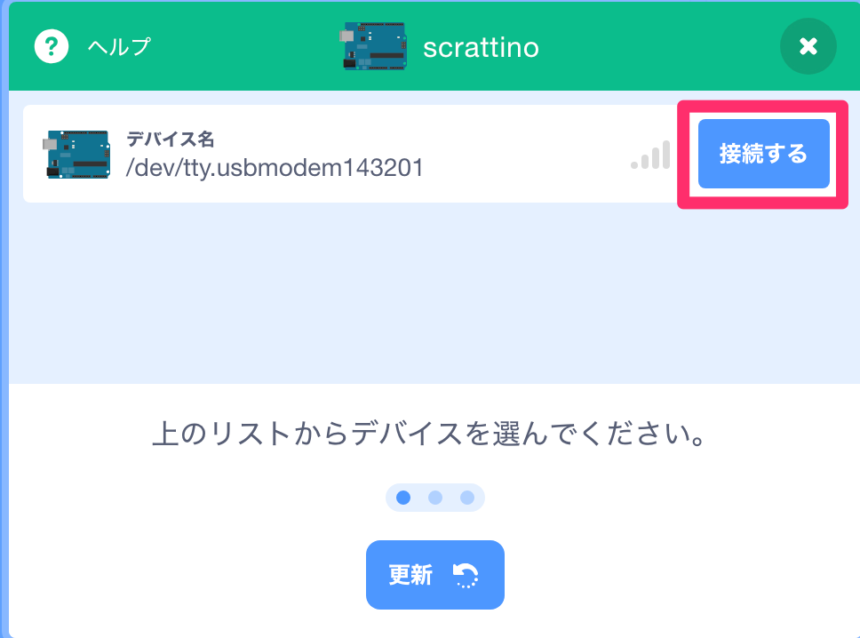
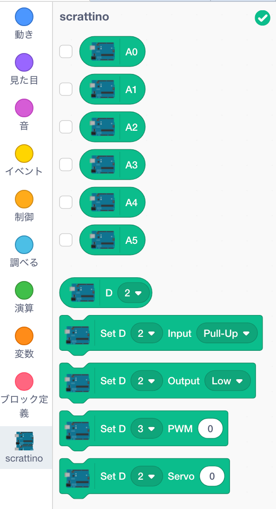

1. 準備
1-1. 「Scrattino Desktop」のダウンロード
こちらのページから「Scrattino.Desktop-0.2.0-mac.dmg 」をダウンロード＆インストール。
1-2. Arduino側の準備
- Arduino本体とPCをつなぐ。
- Arduino IDE を立ち上げ、メニュー『File（ファイル） > Examples（スケッチ例） > Firmata > StandardFirmata』を開く。
- 検証して書き込む。
- 書き込みが完了したらArduinoのソフトウェアは使用しないので終了する。
- 【Firmata が無い場合】
-
- メニュー『Tools（ツール） > Manage Libraries（ライブラリを管理…）』を開く。
- 検索窓に「firmata」と入力し、出てきた候補の最初のライブラリをインストールする。

1-3. 「Scrattino Desktop」とArduinoの接続
- 先ほどインストールした「Scrattino Desktop」を立ち上げる。
- 左下のボタンをクリック。

- 拡張機能の中から「scrattiono」を選択。

- Arduinoが認識されたら「接続する」をクリック。

- 「エディターへ行く」をクリック。
- Arduinoと連携するためのブロックが追加される。
